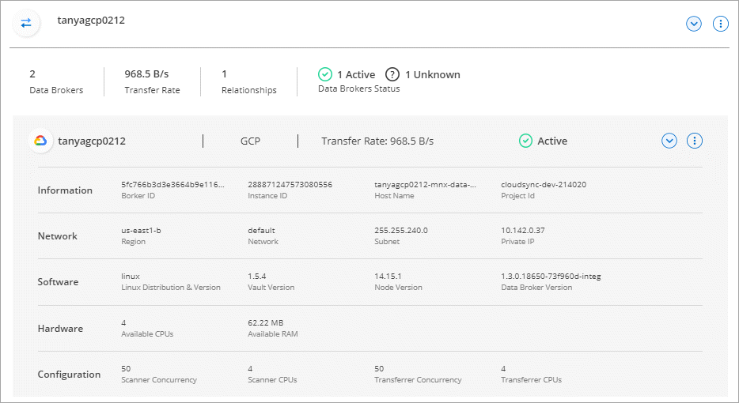

请求文档变更
请求文档变更 在 GitHub 上编辑
在 GitHub 上编辑 提供者指南
提供者指南管理数据代理组
数据代理组将数据从源位置同步到目标位置。对于您创建的每个同步关系，组中至少需要一个数据代理。通过向组中添加新数据代理，查看组信息等来管理数据代理组。
数据代理组的工作原理
一个数据代理组可以包含一个或多个数据代理。将数据代理分组在一起有助于提高同步关系的性能。
组可以管理多个关系
数据代理组一次可以管理一个或多个同步关系。
例如，假设您有三个关系：
-
关系 1 由数据代理组 A 管理
-
关系 2 由数据代理组 B 管理
-
关系 3 由数据代理组 A 管理
您希望提高关系 1 的性能，以便向数据代理组 A 添加新的数据代理由于组 A 还管理同步关系 3 ，因此关系的同步性能也会自动提高。
组中数据代理的数量
在许多情况下、单个数据代理可以满足同步关系的性能要求。如果不支持，您可以通过向组添加其他数据代理来提高同步性能。但是，您应该首先检查可能影响同步性能的其他因素。 "详细了解如何确定何时需要多个数据代理"。
安全建议
为了确保数据代理计算机的安全性， NetApp 建议执行以下操作：
-
SSH 不应允许 X11 转发
-
SSH 不应允许 TCP 连接转发
-
SSH 不应允许使用通道
-
SSH 不应接受客户端环境变量
这些安全建议有助于防止未经授权连接到数据代理计算机。
将新数据代理添加到组
可以通过多种方法创建新的数据代理：
-
创建新同步关系时
-
在 * 管理数据代理 * 页面中，单击 * 添加新数据代理 * ，以在新组中创建数据代理
-
通过在现有组中创建新的数据代理，从 * 管理数据代理 * 页面访问此信息
-
您不能将数据代理添加到管理加密同步关系的组中。
-
如果要在现有组中创建数据代理，数据代理必须是内部数据代理或相同类型的数据代理。
例如，如果某个组包含 AWS 数据代理，则可以在该组中创建 AWS 数据代理或内部数据代理。您不能创建 Azure 数据代理或 Google Cloud 数据代理，因为它们不是相同的数据代理类型。
-
单击 * 同步 > 管理数据代理 * 。
-
单击 * 添加新数据代理 * 。
-
按照提示创建数据代理。
要获得帮助，请参见以下页面：
-
单击 * 同步 > 管理数据代理 * 。
-
单击操作菜单并选择 * 添加数据代理 * 。
-
按照提示在组中创建数据代理。
要获得帮助，请参见以下页面：
编辑组的名称
随时更改数据代理组的名称。
-
单击 * 同步 > 管理数据代理 * 。
-
单击操作菜单并选择 * 编辑组名称 * 。

-
输入新名称并单击 * 保存 * 。
Cloud Sync 将更新数据代理组的名称。
设置统一配置
如果同步关系在同步过程中遇到错误，统一数据代理组的并发性有助于减少同步错误的数量。请注意，更改组的配置可能会降低传输速度，从而影响性能。
建议不要自行更改配置。您应咨询 NetApp ，了解何时更改配置以及如何更改配置。
-
单击 * 管理数据代理 * 。
-
单击数据代理组的设置图标。

-
根据需要更改设置，然后单击 * 统一配置 * 。
请注意以下事项：
-
您可以选择要更改的设置—不需要一次性更改全部四个设置。
-
将新配置发送到数据代理后，数据代理将自动重新启动并使用新配置。
-
此更改可能需要长达一分钟的时间，此更改将在 Cloud Sync 界面中显示。
-
如果数据代理未运行，则其配置不会更改，因为 Cloud Sync 无法与其通信。数据代理重新启动后，配置将发生更改。
-
设置统一配置后，任何新的数据代理都将自动使用新配置。
-
在组之间移动数据代理
如果需要提高目标数据代理组的性能，请将数据代理从一个组移动到另一个组。
例如，如果某个数据代理不再管理同步关系，您可以轻松地将其移动到另一个管理同步关系的组。
-
如果某个数据代理组正在管理同步关系，并且该组中只有一个数据代理，则无法将该数据代理移动到另一个组。
-
您不能将数据代理移入或移出管理加密同步关系的组。
-
您无法移动当前正在部署的数据代理。
-
单击 * 同步 > 管理数据代理 * 。
-
单击
 展开组中的数据代理列表。
展开组中的数据代理列表。 -
单击数据代理的操作菜单，然后选择 * 移动数据代理 * 。

-
创建新的数据代理组或选择现有数据代理组。
-
单击 * 移动 * 。
Cloud Sync 会将数据代理移动到新的或现有的数据代理组。如果上一个组中没有其他数据代理，则 Cloud Sync 会将其删除。
更新代理配置
通过添加有关新代理配置的详细信息或编辑现有代理配置来更新数据代理的代理配置。
-
单击 * 同步 > 管理数据代理 * 。
-
单击
展开组中的数据代理列表。 -
单击数据代理的操作菜单，然后选择 * 编辑代理配置 * 。
-
指定有关代理的详细信息：主机名，端口号，用户名和密码。
-
单击 * 更新 * 。
Cloud Sync 会更新数据代理，以使用代理配置进行 Internet 访问。
查看数据代理的配置
您可能希望查看有关数据代理的详细信息，以确定主机名， IP 地址，可用 CPU 和 RAM 等内容。
Cloud Sync 提供了有关数据代理的以下详细信息：
-
基本信息：实例 ID ，主机名等
-
网络：区域，网络，子网，专用 IP 等
-
软件： Linux 分发版，数据代理版本等
-
硬件： CPU 和 RAM
-
配置：有关数据代理的两种主要进程的详细信息—扫描程序和传输程序

扫描程序将扫描源和目标，并确定应复制的内容。传输器将执行实际复制。NetApp 人员可能会使用这些配置详细信息来建议可优化性能的操作。
-
单击 * 同步 > 管理数据代理 * 。
-
单击
展开组中的数据代理列表。 -
单击
查看有关数据代理的详细信息。
解决数据代理的问题
Cloud Sync 会显示每个数据代理的状态，以帮助您解决问题。
-
确定状态为 " 未知 " 或 " 失败 " 的任何数据代理。

-
将鼠标悬停在上
 图标以查看失败原因。
图标以查看失败原因。 -
更正问题描述。
例如，如果数据代理脱机，您可能只需重新启动它，或者如果初始部署失败，您可能需要删除数据代理。
从组中删除数据代理
如果不再需要数据代理或初始部署失败，您可以从组中删除该数据代理。此操作仅从 Cloud Sync 的记录中删除数据代理。您需要手动删除数据代理以及任何其他云资源。
-
当您从组中删除最后一个数据代理时， Cloud Sync 将删除组。
-
如果某个关系正在使用某个组，则不能从该组中删除最后一个数据代理。
-
单击 * 同步 > 管理数据代理 * 。
-
单击
展开组中的数据代理列表。 -
单击数据代理的操作菜单，然后选择 * 删除数据代理 * 。

-
单击 * 删除数据代理 * 。
Cloud Sync 将从组中删除数据代理。
删除数据代理组
如果某个数据代理组不再管理任何同步关系，您可以删除该组，从而从 Cloud Sync 中删除所有数据代理。
Cloud Sync 删除的数据代理仅会从 Cloud Sync 的记录中删除。您需要从云提供商和任何其他云资源中手动删除数据代理实例。
-
单击 * 同步 > 管理数据代理 * 。
-
单击操作菜单并选择 * 删除组 * 。
-
要进行确认，请输入组名称，然后单击 * 删除组 * 。
Cloud Sync 将删除数据代理并删除组。